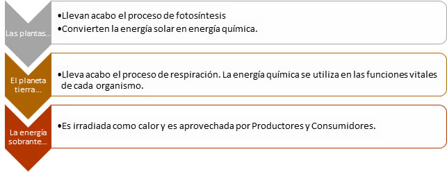

Ecosistema.
El ecosistema, se puede definir como un sistema abierto donde interactúan los componentes estructurales bióticos y abióticos, y el flujo de materia y energía a través de ellos, que son componentes funcionales.
Todos los ecosistemas se estratifican en cierto grado. La estratificación se refiere a las separaciones entre los organismos en el espacio, o bien, en el tiempo.
Evolución de las comunidades bióticas – La sucesión ecológica es el proceso mediante el cual los ecosistemas cambian a través del tiempo y dependen de la progresión de una comunidad desde la etapa pionera o inicial hasta que son una comunidad madura o estable. La comunidad final en una sucesión se denomina comunidad clímax.
Componentes de un ecosistema – Para comprender la función de un ecosistema debemos conocer sus componentes, que reciben el nombre de factores ambientales y se dividen en factores bióticos y abióticos
Componentes funcionales de un ecosistema – La tierra es un ecosistema abierto que necesita constantes entrada y salida de energía solar.
La radiación solar que atraviesa la atmósfera y que se absorbe en la superficie terrestre se utiliza en diferentes procesos que constituyen los componentes funcionales de los ecosistemas.
Proceso de transformación de la luz solar a energía
Las plantas transforman la luz solar en energía química a través de la fotosíntesis, para después utilizarla en el proceso de respiración por los heterótrofos y plantas, con el fin de transformarla en energía de trabajo en forma utilizable en forma de calor. Esta energía fluye a través de los seres vivos en la cadena alimentaria, de tal forma que las plantas, al ser productores, transforman los rayos del Sol en energía viviente por medio del cloroplasto, organelo que ha permitido la existencia a demás organismos.

Cadenas alimentarias
La energía se mueve a través de la biosfera de un organismo a otro. Una cadena alimentaria es una serie de relaciones que nos indican qué organismo aprovechan a otros, después de haber sido repartida por el proceso ya visto. Las plantas son organismos autótrofos, o sea que ellos elaboran su alimento, son los productores, los herbívoros son heterótrofos que se alimentan de tejido vegetal, y los carnívoros o consumidores secundarios, se alimentan de ellos. Sin embargo, algunos carnívoros se alimentan de otros carnívoros por lo que consideran consumidores terciarios; y al final están los degradadores que se alimentan de los organismos muertos o de la materia orgánica en descomposición, estos organismos reincorporan la materia al suelo o a los ciclos biogeoquímico. Cada nivel de esta cadena se denomina nivel trófico.
Gracias a todos los ciclos naturales que no se detienen ni deben detenerse, el aire y el agua conservan la atmósfera terrestre a una temperatura relativamente constante, indispensable, para los desarrollos ecológicos y estabilidad del planeta.